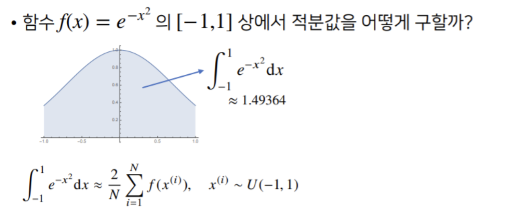

[ML] 확률론
딥러닝에서 확률론에 대해 공부해야 하는 이유
기계학습에서 손실함수의 작동원리는 데이터 공간을 통게학적으로 해석해서 유도함.
- 예측이 틀릴 위험(risk)을 최소화하도록 데이터를 학습하는 원리는 통계적 기계학습의 기본원리
- 회귀분석에서 손실함수로 사용되는 $L_2$-norm 은 예측오차의 분산을 가장 최소화 하는 방향으로 학습하도록 유도
- 분류문제에서 사용되는 교차엔트로피(cross-entropy) 는 모델예측의 불확실성을 최소화하는 방향으로 학습하도록 유도
- 분산 및 불확실성을 최소화하기 위해서는 측정하는 방법을 알아야함
- 두 대상을 측정하는 방법을 통계학에서 제공하기 때문에 기계학습을 이해하려면 확률론의 기본개념을 알아야함
확률 분포
데이터공간 : $x\times y$
- 데이터 공간에서 데이터를 추출하는 분포 :
- 데이터는 확률변수 : $(x,y)$~$D$
- 결합분포 $P(x,y)$ 는 $D$ 를 모델링한다.
- 조건부확률 $P(x|y)$ 는 데이터 공간에서 입력 $x$ 와 출력 $y$ 사이의 관계를 모델링한다
이산확률분포 vs 연속확률변수
- 확률변수는 확률분포 $D$ 에 따라 이산형
discrete과 연속형continuous확률변수로 구분하게 된다. - 이산형 확률변수는 확률변수 가 가질 수 있는 경우의 수를 모두 고려하여 확률을 더해서 모델링한다.
$$ P(X\in A) = \displaystyle\sum_{X\in A}{P(X \in x)} $$
- 연속형 확률변수는 데이터 공간에 정의된 확률변수의 밀도 위에서의 적분을 통해 모델링한다.
- 밀도는 누적 확률분포의 변화율을 모델링한다
$$ P(X \in A) = \displaystyle\int_{A}{P(x)dx} $$
조건부확률과 기계학습
- 조건부확률 $P(y\mid x)$ 는 입력변수 $x$ 에 대해 정답이 $y$ 일 확률을 의미한다.
- ex 주사위를 굴려 나온 숫자가 홀수 일때 숫자가 1일 확률
- 분류문제에서 softmax $(W\phi + b)$ 는 데이터 x로부터 추출된 특징패턴 $\phi(x)$ 와 가중치 행렬 $W$을 통해 조건부확률 $P(y\mid x)$ 를 계산한다.
몬테카를로 샘플링
기계학습의 많은 문제들은 확률분포를 명시적으로 모를 때가 대부분
- 확률분포를 모를 때 데이터를 이용하여 기대값을 계산하려면 몬테카를로(Monte Carlo) 샘플링 방법을 사용해야 한다.
- 몬테카를로 기법은 연속, 이산 상관없이 성립함.
- 몬테카를로 샘플링은 독립 추출만 보장된다면 대수의 법칙(law of large number)에의해 수렴성을 보장
몬테카를로 예제

- $f(x)$의 적분값을 구하는것은 불가능에 가깝다. (구한다면 아마.. 수학과 쪽으로 가야하지 않을까?)
1
2
3
4
5
6
7
8
9
10
11
12
13
14
15
16
import numpy as np
def mc_int(fun, low, high, sample_size=100, repeat=10):
int_len = np.abs(high - low)
stat = []
for _ in range(repeat):
x = np.random.uniform(low=low, high=high, size=sample_size)
fun_x = fun(x)
int_val = int_len * np.mean(fun_x)
stat.append(int_val)
return np.mean(stat), np.std(stat)
def f_x(x):
return np.exp(-x**2)
print(mc_int(f_x, low=-1, high=1, ssample_size=10000, repeat=100))